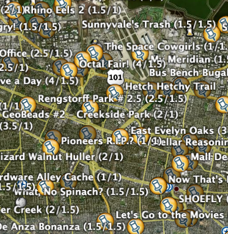

01.28.07
Posted in boggle, programming at 11:17 pm by danvk
After showing Evan my online boggle solver at work, I was inspired to start writing some blog posts on how that program works. So here goes!
Boggle is a game by Hasbro in which you try to find words on a 4×4 grid of letters. There are 16 dice with six letters apiece on them. You roll the dice into the 4×4 slots and connect them to form words. The longer the words you find, the more points you get.

You can use diagonals and you can cross your own path, but you can’t use the same die twice in forming a word:

As a CS-type, it wasn’t long before I started thinking about how to write a computer program to quickly find all the words on a Boggle board. The right way to think about the board is as a bidirectional graph:

To get all sequences of letters in a graph, we can just do a depth-first search. There will be a ton of these sequences, but most of them will be phrases like “aefbg” that aren’t real English words. So we’ll also need a dictionary to filter out the non-words. Then it’s just a matter of scoring:
| Length |
Score |
| 1-2 |
0 |
| 3-4 |
1 |
| 5 |
2 |
| 6 |
3 |
| 7 |
5 |
| 8-17 |
11 |
Seventeen letter words are possible! Just look at the ‘inconsequentially’ board above. The “qu” die is a minor nuisance that’ll keep coming up. It’s the only die that doesn’t have just one character on each face.
Next time we’ll code up a solution in Ruby and test its performance. After that, we’ll start looking at optimizations and how to find the highest-scoring Boggle board.
Permalink
01.26.07
Posted in tennis at 3:22 am by danvk
Those were two spectacularly bad semifinals. Federer beat Roddick 6-4, 6-0, 6-2. Not even close. He won 11 games in a row. Then tonight, Gonzo beats Tommy Haas 6-1, 6-3, 6-1. Even more of a blowout!
I really thought Roddick would push Fed in the first semifinal, but Federer played a perfect match. So did Gonzo. The final is on at 12:30 AM Saturday (PST)… I hope it’ll be worth staying up for!
(Also worth noting: Wikipedia is a surprisingly good place to track sports events)
Permalink
01.15.07
Posted in Uncategorized at 11:37 am by danvk
Who would have guessed? The Wave wasn’t invented until 1981, and it even has its own priority dispute! I’m taking Crazy George’s side over Rob Weller’s, since he has so much more vested in this.
Permalink
01.13.07
Posted in personal at 5:30 pm by danvk
I installed the Google Earth plugin for geocaching and looked in my area.

Jeeze. I don’t know where to start! Their Google Maps interface is less cluttered and quite well-done. If you’ve got a GPS, you have no excuse. Go caching!
Permalink
Posted in meta at 5:19 pm by danvk
I was amazed how quickly the webspammers found the comments form on this site and started dumping cialis links on it. I’ve cleaned up the ones that made it through (there were 48 more listed as “pending” by WordPress) and installed a CAPTCHA plugin to prevent this in the future. For those of you who don’t know, when a web site asks you to enter some random characters in a hard-to-read image, that’s a CAPTCHA.
Hopefully you won’t notice, though. This is a “smart CAPTCHA” that uses JavaScript to automatically fill out the form when a real browser is visiting. I’ll see how well this works. Here’s hoping!
Update: This plugin did a great job of stopping comment spam by effectively turning off comments from unregistered users. I’ve turned it off and I’m switching to Akismet. (2/11/2007)
Permalink
« Previous Page — « Previous entries
Next entries » — Next Page »